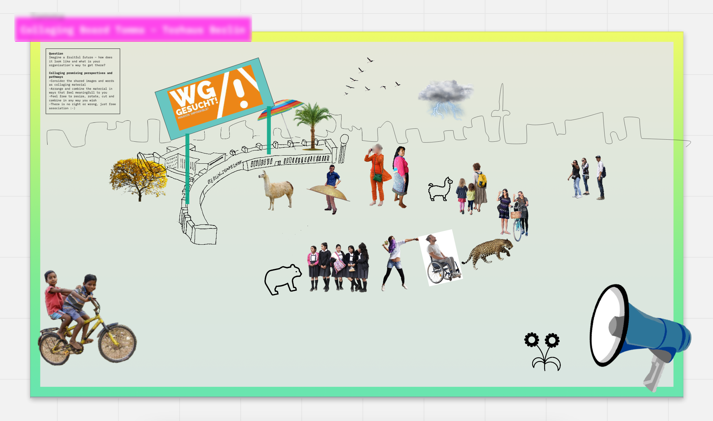
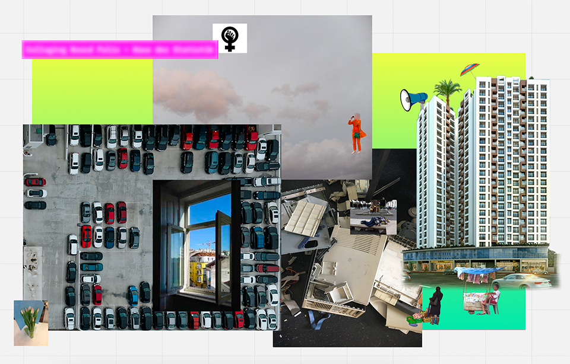
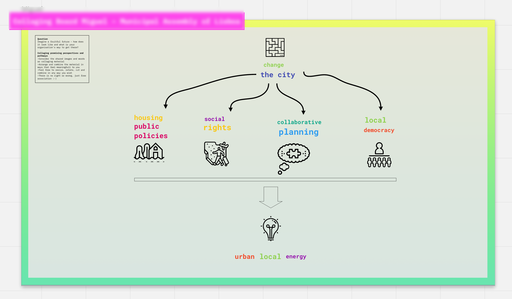
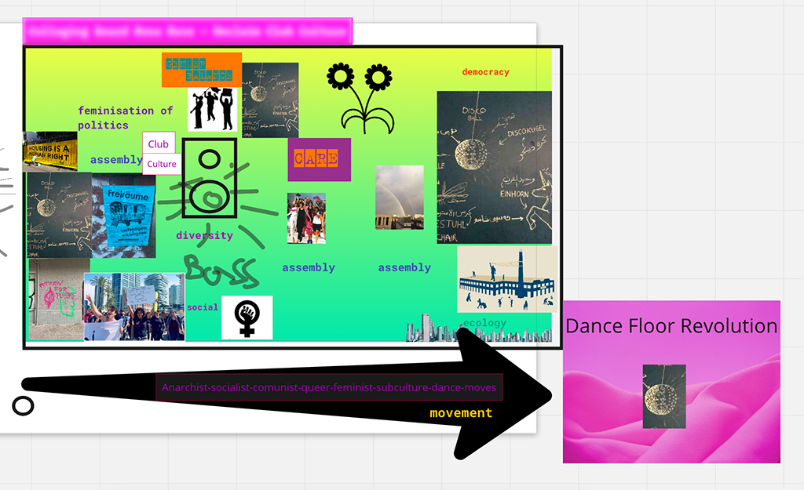

THIS IS MUNICIPALISM
About Municipalism
While racist and new fascist forces are gaining popularity and determine the public discourse with nationalist and xenophobic narratives and while the neoliberal system claims that ‘there is no alternative‘, a contagious radical democratic movement is emerging across Europe that has the potential to spread: the need to do things differently and small but very concrete victories, gave rise to (new) municipalism. Municipalism stands for the idea of a political approach to community, which involves citizens in governing through participation. Either in collaborating with the state or in creating counter perspectives, these initiatives meet social crises with courage and concrete utopias. They are interested in a profound change of society, working on practices of translocal solidarity for everyday life. Their agendas are broad, drawing together resistance and creation across multiple times and places – from the smallest local context to the global scale. Acting on a local level (of politics and citizen engagement) is crucial to the concept of municipalism and tries to reflect that people who are affected by decisions should also hold the power over these. Feel free to explore the variety of different scales and agendas of initiatives of municipalism on this website. :-)
About this project
We are an interdisciplinary team of students from the University of Applied Sciences Potsdam, the University of Potsdam and the Humboldt University Berlin and found each other in the course „Mapping Cities – Making Cities“ by Prof. Dr. Marian Dörk at University of Applied Sciences Potsdam in the winter semester of 2020/21. This project aims to communicate the concept of municipalism in a visual and meaningful way. It is a curated database of political culture with narrative visualizations in agenda setting reflecting the multiple meanings of municipalism – an ongoing forum for action and reflection. At the intersection of data visualization and urban transformation this project aims to support municipalist movements by sharing knowledge and raising awareness about their civic engagement, collective efforts and initiated political processes for a more just society. An inspiration for our visualisation was the saying by Eduardo Galleano: “many small people doing can change the world”. With small actions of many, a seemingly grey city can become a colourful place where we want to live and thrive. Actions and dispute are inherent part of our understanding of a city. Our intention was to not only present a network of concrete initiatives and substantive policies, but to illustrate which ideas and positions shape them and how they do politics in order to learn from each other, collaborate and maybe find new alliances. For this we invited experts in the field from municipalist organisations for a co-creation workshop where we asked everyone to describe their work and vision in a visual way through the technique of collaging. We want to thank all participants of the workshop for their time and all the experts who shared their knowledge on this project with us. This gave us some insights in the importance of certain topics and their way of connecting them for these activist/ experts. We are aware of the bias we have when selecting topics to present on this website. This reflects our (individual) personal experience, our role as students of European universities and the selection of workshop participants who were mainly Berlin-based organisations. Please contact us for more information about the project.
Hello and thanks for visiting. To find out more about municipalism please visit the desktop version of this webpage. See you there :-)
Feminize Politics Now!
Claiming space in a man-made world
First, gender equality in institutional representation and public participation. Second, a commitment to public policies that challenge gender roles and seek to break down patriarchy. Third, a different way of doing politics, based on values and practices that put an emphasis on everyday life, relationships, the role of the community and the common good.
The feminization of politics emphasizes goals like cooperation, participation and considering others’ interests that are valuable in themselves, beyond the question of gender. These elements are the ones that can make a positive impact on people’s lives in the long term, beyond the immediate effect of certain left-wing policies. It is about inclusivity and consciousness of peripheries and marginalized groups and the (intersecting) problems of ethnicity, race, religion, gender and class.
Find out more in this toolkit developed by the municipalist movement:
www.rosalux.eu/en/article/1586
“The local was where democracy was born; it is now where we will recover it.” – Fearless Cities and other networks
More than simply implementing more innovative leftist policies locally, they are aiming to change how to do politics to begin with. They recognize that one cannot keep on trying the same recipes and waiting for something different to happen. But this is also why the municipalist movements are works in progress: there are no roadmaps or blueprints to work with. Both are networks who care about municipalism in various ways:
Minim is an active network by activists, researchers and governmental/administrative members who felt the need to connect and exchange about municpalism. They also publish reports, articles and try to function also as a platform for consultation when trying to implement municipalist ideas.
www.minim-municipalism.org
The Fearless City Network is a network of initiatives and platforms who are active in working with local parliaments or work outside of these. This network started from an early municipalist centre of Barcelona and they hold network congresses and also wrote a book that is a guideline on how to start a Municipalist movement. www.fearlesscities.com/
“Under the paving stones, the beach” – Situationist International
"Sous les pavés, la plage!" – a famous quote from the political group Situationist International of the french protest movement in 1968 was one of the many clarion calls to imagine another world. The imagined vital possibilities of alternative ways of being and living could flourish. Beyond opressive structures of society, politics, and capitalism there might be another life; one in which creating new situations could disrupt everyday banalities, and stimulate new ways of thinking. "To change life, however, we must first change space!" Similar to this, the concept the right to the city was developed in these times by French sociologist Henri Lefebvre. This demand represents a perspective of radical democratic political organization, which, through collective and localized organization 'from below', opposes statehood and capitalist exploitation. As manifesto it builds a background on which many municpalist movements still rely on: „to [challenge] central power from the ‘local powers’, in the capacity for action of municipal forces linked directly to the territory in question.“ But why is the focus on the city? Its density of crossing points and encounters of goods, money, people, mindsets make it the battleground for a better future in general.
So join the arena to fight the grey!
Find out more here:
www.right2city.org/news/book-the-right-to-the-city-building-another-possible-world/
www.metrozones.info/schlagworte/the-right-to-the-city/
www.abahlali.org/files/Harvey_Rebel_cities.pdf
www.wemgehoertdiestadt.de/berlin
"Bridging the gap between the global north and global south"
– Member of the Minim Network
There is not a general guideline on how to implement municipalism. These could even be misleading, when trying to start municipalistic initiatives. Translating concepts and ideas from the Global North to the Global South might not work and neglect certain political and historical conditions.
In the Lebanon for example municipalistic movements might act outside the existing political systems, different to movements in Spain/Europe. As the existing political system already acts on a municipalistic level, build on French and Ottoman domination yet not progressive because of its scale, more problematic. Rather “..the alternative formations that rely on care, networking, mutual aid, and solidarity across municipal borders” by civic organisations show possible political changes in the Lebanon. These also reflect beyond the local trap and feminize politics now as key points of the success of municipalism. To accept different initital points and strategies and let them join the (theoretical) network, is what is needed to open to include movements from the Global South. But is the concept of municipalism even translatable and can it travel to the global South?
Find out more here:
www.egnalegna.org
Saab, Sara Dima Abi. "Resisting legal and political infrastructures in Lebanon". Minim Report N. 3 (2020)
Border politics and translocal solidarity
Across Europe, urban solidarity movements are gaining momentum. Under the label of ‘Welcoming Cities’, ‘Cities of Refuge’ or ‘Solidarity Cities’, civil society groups, local politicians and city administrations are defying the growing restrictions of border regimes and migration policies on the European and national level. Municipalism as a form of progressive localism which on the one hand connects the local and the global through translocal solidarity, and on the other scales-up and becomes an alternative way of doing politics beyond the state.
From: Wenke, Christoph/Kron, Stefanie (eds). 2019: Solidarity Cities in Europe. Charity or Pathways to Citizenship: A New Urban Policy Approach, Berlin, Rosa-Luxemburg-Stiftung.
www.solidarity-city.eu
www.fromseatocity.eu
www.web.blindspots.support/blog
Common spaces, common concerns

Collage by a member of Torhaus Berlin on a fruitful future, 19 Jan 2021
Find out more:
www.torhausberlin.de/
People before profits and citizens before the laws of the market. Public and commons properties against neoliberal looting. Innovative models of citizenship and participation. The interactive database Public Futures is an open place for creating and exchanging knowledge about de-privatisation of basic services and infrastructure at the municipal, regional, and national levels. www.publicfutures.org/#/about
"The debris of the past is haunting many good ideas of the now" – Member of Haus der Statistik

Collage by a member of Haus der Statistik on a fruitful future, 19 Jan 2021
Find out more:
www.hausderstatistik.org
Housing is a human right
Adequate housing was recognized as part of the right to an adequate standard of living in the 1948 Universal Declaration of Human Rights. Since then, cities have become centers of capital and multinational cooperations, where real estate is a flourishing financial market. This causes increasing housing costs and a struggle for many to pay these, because they are rising faster than incomes and the supply of affordable houses doesn't keep up with demand.
On the other hand, now cities and their inhabitants are developing confidence and a wealth of powerful innovative policies and initiatives to respond to the accelerated commodification of their homes. Especially the last years have proven that the reliance on the state is not enough. It needs initiatives claiming these rights whether by pushing local governments or by establishing independent housing projects, which beyond the right for housing also ensure a good quality of life for all. Affordable Housing is important, but only as part of a wider class struggle fought within and over urban space.
Database of articles on tools and ideas to fight existing housing struggles:
www.minim-municipalism.org/database-tag/housing
Beyond the local trap
Politics, just a matter of scale? Municipalism comes from the word municipality, a local level of administrative. So, from first impression, hearing about municipalism, the focus lies on the implementation of a local level of politics. Is this the key to a better more just future? Are these a priori more democratic than categories we think in at the moment like global or national? The New municipalist movement emerged in the last years says: no. No, as all the scales of governing are constructed some persons and are not inherently natural to the organisation of human societies. So, also local level of politics can be hierarchical, non participatory and are not automatically municipalist.
It is rather a “a strategic site for developing a transformative and prefigurative politics. It more looks for proximity in a way to “mobilize social forces” and how political decision are organised. The local level is though very important as it gives more accessibility to everyday life and the possibility to see an impact on your work, there. Within the community, the importance of scale in municipalism is an ongoing discussion, but also translocal initiatives can give a good example about municipalist organisation of politics (see textbox about translocal solidarity).
From: Russell, Bertie. "Beyond the local trap: New municipalism and the rise of the fearless cities." Antipode 51.3 (2019): 989-1010.
Municipalism + Culture = Democracy
Culture helps you build the world you want to see. Democracy needs your imagination. Today the forces of Municipalism and Culture are interdependent and merged to create a profound and sustainable shift in policy and politics and, most critically, in lived experience for the many and not the few in the journey towards a new democracy. The desire to have greater agency and creativity in our own lives, and the possibility of shaping the realities that surround us – not just accepting predetermined options – are vital impulses of our time. The loud and consistent demands for the establishment of a “real democracy” resounded for many months on the squares and streets of cities in Europe and far beyond.
"New Municipalism, New Culture, New Democracy."
– Igor Stokfiszewski:
www.commonspolis.org/en/proposals/nuevo-municipalismo-nueva-cultura-nueva-democracia-igor-stokfiszewski/
How can a civic movement set the agenda in city hall?
Beside cities like Barcelona and Madrid, also in Lisboa, there are already municipalist movements who took the step to move into actual city politics, got seats in the city council and even fill political bodies and ministries.

Collage by a member of Cidadãos por Lisboa on “How to get there”, 19 Jan 2021
Find out more here:
www.cidadaosporlisboa.pt
“Assembly, assembly, assembly!” –Member of Reclaim Club Culture

Collage by a member of Reclaim Club Culture on a fruitful future, 19 Jan 2021
What to do in case of fire? How to prepare for action – Reclaim Club Culture on Solidarity
www.zku-berlin.org/fileadmin/user_upload/krp/SOLIDARITA__T.pdf
What does Municipalism mean to you?
Let us know at :
communicating.municipalism@aol.com
We will review the messages manually and possibly include them here.